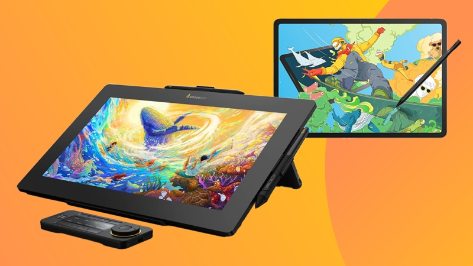
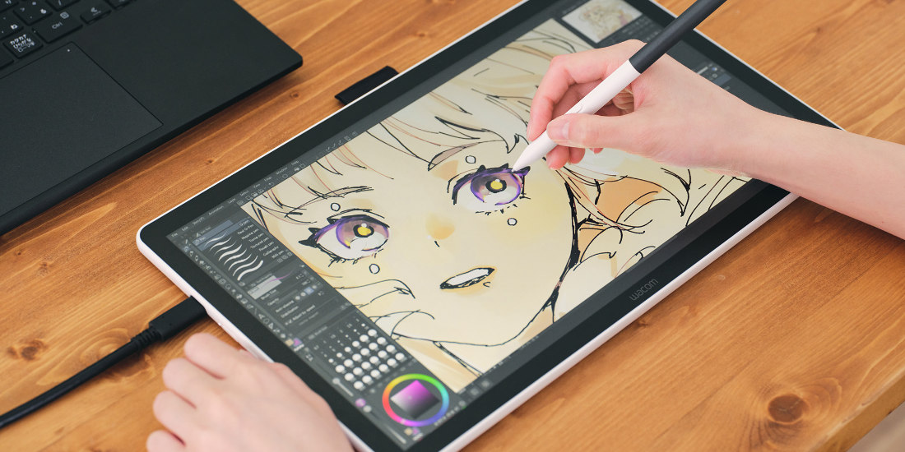
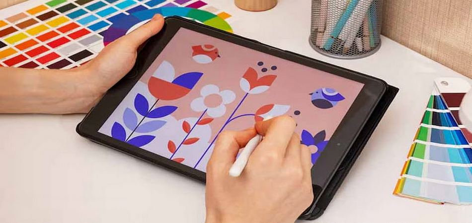
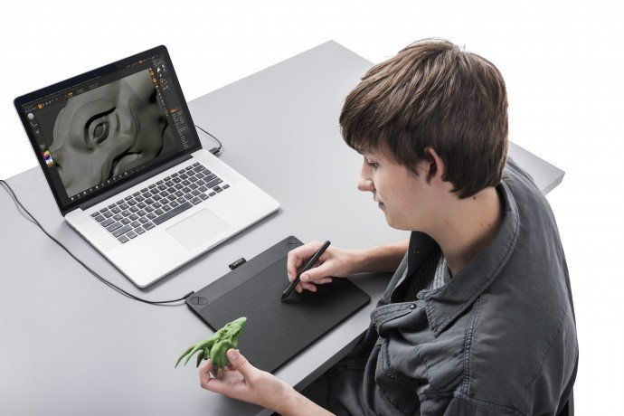

Графічні планшети для творчості та професійної роботи
Графічний планшет - це інструмент, який дозволяє працювати з цифровими зображеннями максимально природно. Завдяки стилусу користувач керує курсором так само, як олівцем на папері.
Сучасні моделі підтримують високу роздільну здатність, мінімальну затримку та велику кількість рівнів натиску. Це забезпечує точність ліній, плавні переходи та повний контроль над деталями зображення.


Для художників
Підтримка 8192 рівнів натиску дозволяє точно контролювати товщину, насиченість та прозорість лінії. Це особливо важливо при створенні ілюстрацій, коміксів та концепт-арту.
Планшети з дисплеєм дають змогу малювати безпосередньо на екрані, що спрощує роботу з деталями. Підтримка нахилу стилуса допомагає створювати природну штриховку та тіні.

Для дизайнерів
Під час створення логотипів, інтерфейсів та поліграфічної продукції планшет забезпечує точність рухів та комфортну роботу з кривими.
Гарячі клавіші та сенсорні панелі пришвидшують процес у Photoshop, Illustrator та Figma. Це зменшує час виконання проєктів і підвищує ефективність роботи.

Для 3D та моделювання
Під час текстурування та цифрового скульптингу планшет дозволяє детально пропрацьовувати поверхні моделей.
Чутливість до натиску дає можливість контролювати силу інструментів у Blender або ZBrush. Це впливає на глибину, чіткість і реалістичність деталей.